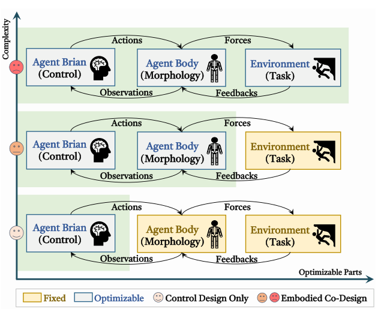
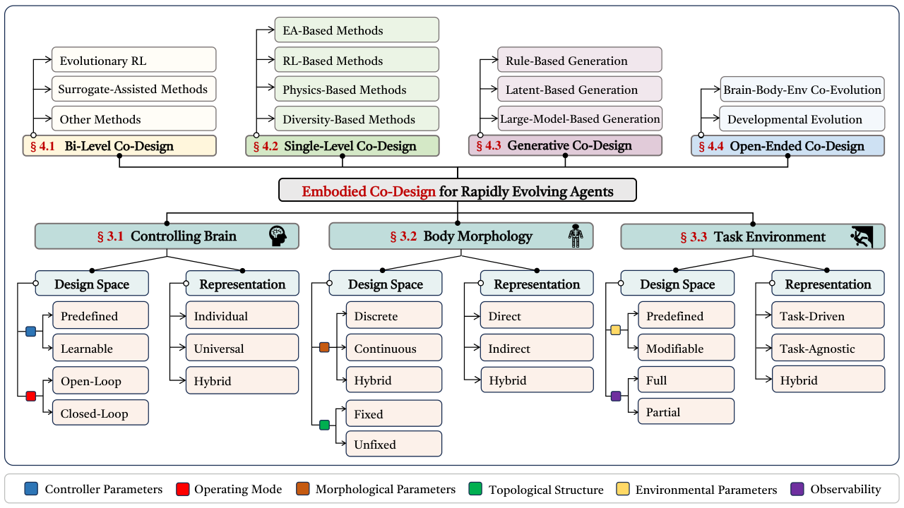
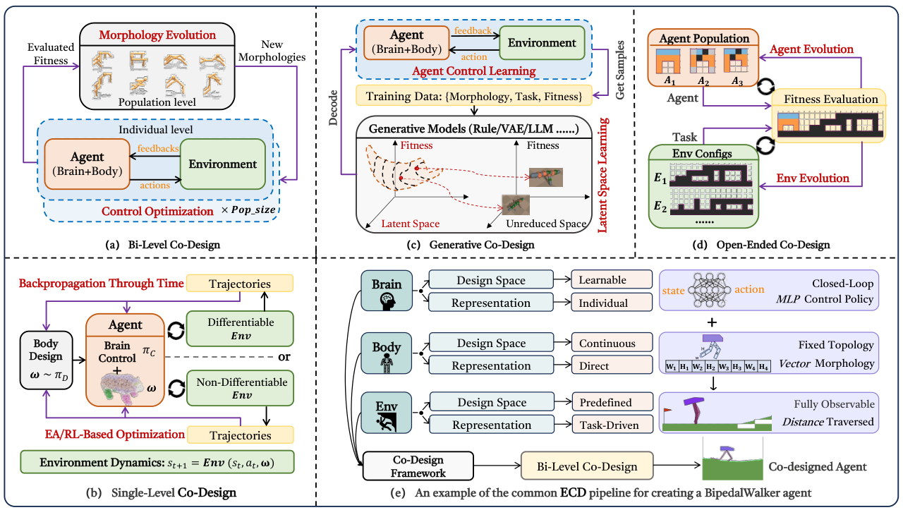
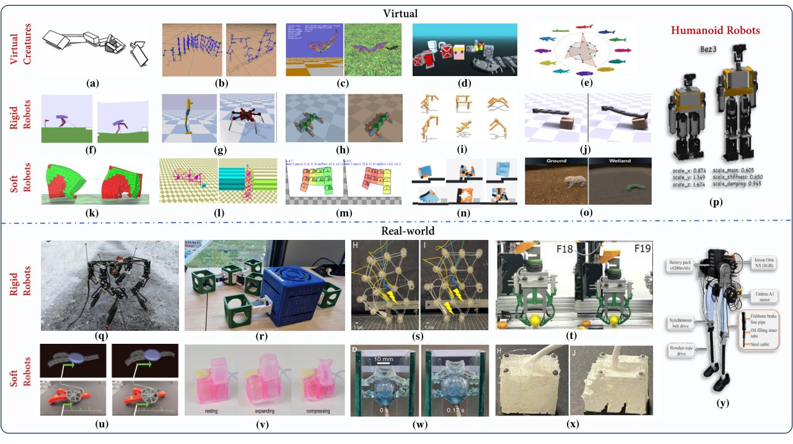

Background & Motivation
這是一篇具身協同設計(Embodied Co-Design, ECD)的方法導向綜述:不再把機器人的身體當成「環境的固定部分」、只訓練大腦,而是同時最佳化身體形態(body)與控制器(brain)。作者提出兩層分類法——下層把設計拆成控制大腦/身體形態/任務環境三元件(各自有 design space × representation),上層把 100+ 篇工作歸入 bi-level、single-level、generative、open-ended 四大框架——再整理模擬器、資料集、真機案例與五大開放挑戰。它本身不做實驗,價值在「地圖」與共同詞彙。
A method-centric survey of Embodied Co-Design (ECD): instead of treating a robot's body as a fixed part of the environment and training only its brain, ECD jointly optimizes body morphology and controller. The authors propose a two-layer taxonomy—a lower layer that splits design into controlling brain / body morphology / task environment (each with a design space × representation), and an upper layer that sorts 100+ works into bi-level, single-level, generative and open-ended frameworks—then review simulators, datasets, real-robot cases and five open challenges. It runs no experiments; its value is the map and a shared vocabulary.

如果只有 30 秒In 30 seconds
- 問題 — 身體固定時,控制器得扛下所有協調負擔;但一旦把身體也放開,就得到巨大、常是組合式的設計空間,而且每個候選身體通常都要從頭重訓控制器——問題高度非凸、計算昂貴。
- Problem — With a fixed body the controller carries the whole coordination burden; but freeing the body yields a vast, often combinatorial design space, and each candidate body typically needs a controller retrained from scratch—highly non-convex and expensive.
- 方法(分類法) — 三種形式化視角(bi-level 巢狀最佳化、單層 MDP、可微模型)+ 兩層分類:下層 3 元件 × {design space, representation},上層 4 框架共 13 子類。
- Method (taxonomy) — three formal views (bi-level nested optimization, single-level MDP, differentiable model) + a two-layer taxonomy: 3 components × {design space, representation} below, 4 frameworks with 13 sub-categories above.
- 綜整結果 — Tables I–VI 共分類約 138 列工作 [導讀補充:導讀者自行計數]:112 列只在模擬、26 列有真機驗證;MuJoCo / EvoGym / Bullet 最常用;約 59% 來自 2023–2025,2025 年出現 LLM/VLM 生成式設計潮。
- Synthesis — Tables I–VI classify about 138 rows of work [guide note: guide's own count]: 112 simulation-only, 26 with real-robot validation; MuJoCo / EvoGym / Bullet dominate; ~59% date from 2023–2025, with an LLM/VLM generative wave in 2025.
- 對足式研究者 — 腿足 + 人形約 30 列,大多是「固定拓樸 + 連續參數(腿長、彈簧)」+ RL 內層 + EA/BO 外層;把它當地圖用,不要當腿足設計手冊。
- For legged researchers — legged + humanoid ≈ 30 rows, mostly "fixed topology + continuous parameters (link lengths, springs)" with an RL inner loop and EA/BO outer loop; use it as a map, not as a legged design manual.
領域脈絡Field context
傳統具身智慧(EI)裡,身體是手工設計、被當作環境的一部分,只有控制器被最佳化。作者指出這種切割的代價:預先指定的形態會限制感知與致動,縮小可達行為空間,若機構設計只追求機械最佳而不考慮怎麼控制,協調行為的負擔就幾乎全落在控制器上。
In traditional embodied intelligence (EI), the body is hand-designed and treated as part of the environment; only the controller is optimized. The authors argue this split is costly: a pre-specified morphology constrains sensing and actuation and narrows the achievable behaviors; if the mechanism is designed for mechanical optimality without regard to control, nearly all the coordination burden falls on the controller.
理論根基有三條:morphological computation(好身體可替大腦做計算,經典例子是無控制的 passive dynamic walker,但它只能做很窄的行為 → brain-body trade-off)、演化論 + Baldwin effect(學習能力加速演化),以及「越複雜的環境孕育越強的腦-身系統」。歷史上 ECD 起於 Evolutionary Robotics(Sims 1994 用演化同時生成圖結構形態與神經控制器),近年因 EA、RL、可微模擬、大模型四股技術而爆發。
Three theoretical roots: morphological computation (a good body computes on the brain's behalf—the classic case is the controller-free passive dynamic walker, which however supports only narrow behavior → the brain-body trade-off), evolutionary theory + the Baldwin effect (learning accelerates evolution), and "richer environments breed more capable brain-body systems." Historically ECD began in Evolutionary Robotics (Sims 1994 evolved graph morphologies and neural controllers together); it has recently surged thanks to EAs, RL, differentiable simulation and large models.
與鄰近領域的分界:A-Life 關心生物現象而非工程功能;Computational Robot Design(拓樸最佳化、CAD)處理可製造性,但控制常被簡化成次要角色;Robot Learning 大多假設形態固定。ECD 的定位是把形態與控制放進同一個最佳化迴圈。
Boundaries with neighbors: A-Life studies biological phenomena rather than engineering function; Computational Robot Design (topology optimization, CAD) handles manufacturability but often treats control as secondary; Robot Learning mostly assumes a fixed morphology. ECD puts morphology and control into one optimization loop.
作者自己點出最好的類比:ECD 之於身體,就像 Neural Architecture Search 之於網路——外層找結構、內層調參數。[導讀補充] 從足式機器人的角度看,我們熟悉的「調腿長、選彈簧、挑減速比」其實落在這張地圖的一個小角落:固定拓樸、連續參數、直接向量編碼、任務獎勵驅動。這篇綜述的價值是讓你看到這個角落之外還有多大的空間,以及別的社群(軟體機器人、虛擬生物)已經發展出哪些可借用的工具。
The authors give the best analogy themselves: ECD is to bodies what Neural Architecture Search is to networks—an outer loop over structure, an inner loop over parameters. [guide note] From a legged-robotics angle, the familiar "tune link lengths, pick springs, choose gear ratios" sits in one small corner of this map: fixed topology, continuous parameters, direct vector encoding, task-reward driven. The survey's value is showing how much space lies outside that corner, and which tools other communities (soft robots, virtual creatures) have built that you can borrow.
核心洞見 · KEY INSIGHTSKEY INSIGHTS
綜述沒有新演算法,但讀完應帶走這幾個觀念:
The survey has no new algorithm, but these are the ideas to carry away:
- 一切成本來自內層迴圈。「評估一個身體 = 重訓一個控制器」是整個領域的瓶頸。[導讀補充] 幾乎每個子類都可以讀成對內層迴圈的一種處置:攤提(universal controller、surrogate)、繞過(生成式先驗、TAME 的 controller-free fitness)、或微分穿過(physics-based)。
- All cost comes from the inner loop. "Evaluating a body = retraining a controller" is the field's bottleneck. [guide note] Nearly every sub-category reads as one way to handle that inner loop: amortize it (universal controllers, surrogates), bypass it (generative priors, TAME's controller-free fitness), or differentiate through it (physics-based).
- 同一問題、三種數學視角。bi-level(巢狀 argmax)、單層 MDP(設計階段 + 控制階段,Transform2Act 一派)、model-based(穿過可微動力學 BPTT)——每種視角大致對應一個框架。
- One problem, three mathematical views. Bi-level (nested argmax), single-level MDP (a design stage + a control stage, the Transform2Act school), and model-based (BPTT through differentiable dynamics)—each view roughly births one framework.
- 控制器的表徵是隱藏關鍵。individual(PID/MPC/CPG/MLP 綁死某個身體)vs universal(GNN、Transformer 跨形態共用)vs hybrid(共享模組 + 形態專屬模組)。Universal 控制器讓「訓一次、評很多身體」成為可能(NGE)。
- Controller representation is the hidden lever. Individual (PID/MPC/CPG/MLP bound to one body) vs universal (GNN, transformer shared across morphologies) vs hybrid (shared + morphology-specific modules). Universal controllers make "train once, evaluate many bodies" possible (NGE).
- 編碼的取捨沒有定論。直接編碼收斂較快、較穩;間接編碼(CPPN、文法、L-system、NCA)地形較平滑、易出對稱模組化形態、早期探索佔優 → 作者建議先間接後直接的混合排程。
- The encoding trade-off is unresolved. Direct encodings converge faster and more consistently; indirect ones (CPPN, grammars, L-systems, NCA) give smoother landscapes, symmetric modular bodies and better early exploration → the authors suggest an indirect-then-direct hybrid schedule.
- 環境會塑造身體。崎嶇地形演化出更穩、肢體更多的形態;複雜/多任務環境的設計遷移更好;DERL 顯示在越難環境中演化的形態,下游學習越快(Baldwin effect 的實證)。
- The environment shapes the body. Rough terrain evolves more stable, limb-rich bodies; complex/multi-task environments yield designs that transfer better; DERL shows bodies evolved in harder environments learn downstream tasks faster (empirical Baldwin effect).
- 現實落差很大。[導讀補充] 138 列裡 81% 只在模擬、87% 純任務獎勵驅動;真機 co-design 集中在固定拓樸的連續參數與夾爪/末端執行器。
- The reality gap is large. [guide note] Of 138 rows, 81% are simulation-only and 87% are purely task-reward driven; real-robot co-design concentrates on continuous parameters of fixed topologies and on grippers / end-effectors.
Problem Diagnosis
現況 vs 痛點Status quo vs pain points
| 現有做法Existing approach | 它的痛點Its pain point |
|---|---|
| 只最佳化控制Control-only EI RL / IL / MPC | 身體固定 → 可達行為被形態框死,控制器承擔全部協調負擔,成為效能瓶頸。Fixed body → achievable behavior is capped by morphology; the controller carries all coordination and becomes the bottleneck. |
| 經典演化機器人學Classic Evolutionary Robotics Sims 1994 … | EA 一把抓;每代常需數千次模擬、收斂慢,難擴展到複雜任務。EAs do everything; often thousands of simulations per generation, slow convergence, hard to scale to complex tasks. |
| Computational Robot Design 拓樸最佳化、CADtopology opt., CAD | 顧及結構可行性與製造,但控制被簡化或當次要元件,多為循序設計。Handles structural feasibility and fabrication, but control is simplified or secondary; mostly sequential design. |
| 跨形態機器人學習Cross-embodiment robot learning | 能讓一個策略泛化到多種身體,但身體仍是給定的,不會去「選」身體。Can generalize one policy across many bodies, but the bodies are still given—it never chooses one. |
| 既有綜述Prior surveys soft / humanoid / ER / A-Life | 侷限單一領域,沒有可橫向比較的結構化分類,也沒納入可微模擬、QD、latent / 基礎模型生成與新 benchmark。Domain-specific, no structured taxonomy for cross-method comparison, and missing differentiable sim, QD, latent / foundation-model generation and new benchmarks. |
作者把核心問題寫成:要怎麼設計一個具身智能體的「最佳身體形式」,才能讓它在所處環境中有效完成任務?(意譯)
The authors pose the core question as: how should one design the optimal bodily form of an embodied agent so it performs its tasks effectively in its environment? (paraphrased)
為什麼難:巢狀最佳化的帳單Why it is hard: the bill for nested optimization
綜述的第一個形式化(Eq.1)就是 bi-level:外層搜形態 \(\omega\),內層為該形態訓出最佳控制 \(\pi^*\)。
The survey's first formalization (Eq.1) is bi-level: the outer level searches morphology \(\omega\); the inner level trains the best controller \(\pi^*\) for that morphology.
[導讀補充] 兩點值得自己補上:(1) \(\pi^*\) 其實是 \(\omega\) 的函數 \(\pi^*(\omega)\);(2) 若內層能精確求解,目標其實等價於聯合最大化 \(\max_{\omega}\max_{\pi}R(\pi,\omega)=\max_{(\omega,\pi)}R(\pi,\omega)\)——bi-level 與 single-level 差的不是目標,而是搜尋程序與成本。粗估帳單:
[guide note] Two things worth adding yourself: (1) \(\pi^*\) is really a function \(\pi^*(\omega)\); (2) if the inner problem is solved exactly, the objective equals the joint maximization \(\max_{\omega}\max_{\pi}R(\pi,\omega)=\max_{(\omega,\pi)}R(\pi,\omega)\)—bi-level and single-level differ not in objective but in search procedure and cost. A rough bill:
對腿足機器人,\(C_{\text{train}}\) 就是一次完整的 RL 步態訓練。作者也點名:即使形態只小改,先前學到的控制器也可能失效;再加上環境條件、設計約束與任務目標帶來異質的回饋訊號,整體高度非凸。
For a legged robot, \(C_{\text{train}}\) is one full RL locomotion training run. The authors also note that even minor morphological changes can invalidate a learned controller, and varying environments, constraints and objectives produce heterogeneous feedback signals—the whole thing is highly non-convex.
難點地圖 — 每個難點由哪個分支回應(= 全文地圖)Difficulty map — which branch answers which difficulty (= map of the survey)
| 難點Difficulty | 為什麼痛Why it bites | 回應的分支Responding branch | 代表作Representative |
|---|---|---|---|
| ① 評估成本(巢狀)① Evaluation cost (nesting) | 內層訓練對複雜任務常要數天inner training often takes days for complex tasks | Surrogate-assisted、universal controller、非同步/大規模平行Surrogate-assisted, universal controllers, asynchronous / massively parallel | Co-Adapt [136] · NGE [196] · A-MEL [158] · Strgar [25] · TAME [95] |
| ② 設計空間巨大且混合② Huge, mixed design space | 離散拓樸 + 連續參數;直接編碼維度爆炸discrete topology + continuous params; direct encodings explode in dimension | 間接編碼、生成式 latent、設計動作 RLIndirect encodings, generative latents, design-as-action RL | CPPN [96] · RoboGrammar [153] · Transform2Act [19] |
| ③ 非凸 + 形態早熟收斂③ Non-convexity + premature convergence | 新形態一出生控制器還很弱,容易被淘汰a new body starts with a weak controller and is culled too early | QD / novelty search、創新保護、successive halvingQD / novelty search, innovation protection, successive halving | MAP-Elites [287] · [247] · GASH [206] |
| ④ 大腦/身體的功勞歸屬④ Brain vs body credit | 分不清增益來自控制器還是形態cannot tell whether gains come from controller or body | MC / empowerment 指標、時間信用分配MC / empowerment metrics, temporal credit assignment | TAME [95] · BodyGen [22] |
| ⑤ 一機一任務過擬合⑤ One-robot-one-task overfitting | 無約束搜尋產生過複雜或過簡單、難遷移的身體unconstrained search yields over-complex or trivial, non-transferable bodies | 可變/多任務環境、open-ended、對稱先驗與成本懲罰Modifiable / multi-task envs, open-ended, symmetry priors and cost penalties | DERL [76] · POET [181] · PreCo [169] |
| ⑥ Sim-to-real 與可製造性⑥ Sim-to-real & manufacturability | 摩擦、材料非線性、接觸、延遲、製造誤差friction, material nonlinearity, contact, delays, fabrication error | 廉價 surrogate → 高保真驗證、domain randomization、模組化硬體Cheap surrogate → high-fidelity validation, domain randomization, modular hardware | Bjelonic [134] · Fadini [235] · Kriegman [408] |
[導讀補充] ①是根本,②③是它在搜尋層面的症狀,④⑤是評估層面的症狀,⑥是落地層面的症狀。腿足研究者最痛的是 ① 與 ⑥:一次 RL 訓練很貴、而設計結果最後必須能被做出來。所以腿足 co-design 幾乎都退守到「低維連續參數 + surrogate」這個最省內層的角落。
[guide note] ① is the root; ② and ③ are its symptoms at the search level, ④ and ⑤ at the evaluation level, ⑥ at the deployment level. Legged researchers feel ① and ⑥ most: one RL run is expensive, and the design must ultimately be buildable. That is why legged co-design retreats to the "low-dimensional continuous parameters + surrogate" corner that is cheapest on the inner loop.
分類法(兩層)The Taxonomy (two layers)
先看全貌(Fig.2)The whole map first (Fig.2)

三種形式化視角(§II-A)Three formal views (§II-A)
① Bi-level 視角:即上一節的 Eq.1(類比 NAS:結構 ↔ 形態、權重 ↔ 控制)。它沒有說明形態與控制之間的因果連結,所以作者補上第二個視角。
① Bi-level view: Eq.1 from the previous section (NAS analogy: architecture ↔ morphology, weights ↔ control). It does not specify the causal link between morphology and control, so the authors add a second view.
② 單層 MDP 視角:把流程切成設計階段 \(\mathcal{D}\) 與控制階段 \(\mathcal{C}\),寫成 9-tuple \(\langle \mathcal{S}^D,\mathcal{S}^C,\mathcal{A}^D,\mathcal{A}^C,\mathcal{F}^D,\mathcal{F}^C,\mathcal{R}^D,\mathcal{R}^C,\gamma\rangle\)。設計策略 \(\pi_d(a^d_t\mid s^d_t)\) 從 \(\omega_0=s^d_0\) 走 \(T_d\) 步長出身體 \(\omega=s^d_{T_d}\);之後條件於 \(\omega\) 的控制策略 \(\pi_c(a^c_t\mid s^c_t,\omega)\) 在 \(F_c(s^c_{t+1}\mid s^c_t,a^c_t,\omega)\) 下執行任務:
② Single-level MDP view: split the process into a design stage \(\mathcal{D}\) and a control stage \(\mathcal{C}\), a 9-tuple \(\langle \mathcal{S}^D,\mathcal{S}^C,\mathcal{A}^D,\mathcal{A}^C,\mathcal{F}^D,\mathcal{F}^C,\mathcal{R}^D,\mathcal{R}^C,\gamma\rangle\). A design policy \(\pi_d(a^d_t\mid s^d_t)\) grows the body over \(T_d\) steps from \(\omega_0=s^d_0\) to \(\omega=s^d_{T_d}\); then a control policy \(\pi_c(a^c_t\mid s^c_t,\omega)\) conditioned on \(\omega\) acts under \(F_c(s^c_{t+1}\mid s^c_t,a^c_t,\omega)\):
兩個策略都能用 RL 的梯度估計(如 PPO)以試誤一起更新——這正是 Transform2Act 一派的數學骨架。
Both policies can be updated together by trial and error with RL gradient estimators (e.g., PPO)—exactly the mathematical skeleton of the Transform2Act school.
③ Model-based 視角:若 \(F_c\) 是可微模擬器或學到的動力學模型,\(s^c_{t+1}=F_c(s^c_t,a^c_t,\omega)\),展開軌跡算終端損失 \(L\)(如行進距離),就能用連鎖律把梯度一路傳回狀態、動作與形態:
③ Model-based view: if \(F_c\) is a differentiable simulator or a learned dynamics model, \(s^c_{t+1}=F_c(s^c_t,a^c_t,\omega)\); unroll a trajectory, compute a terminal loss \(L\) (e.g., distance traveled), and the chain rule carries gradients back to states, actions and morphology:
[導讀補充] 原文 Eq.5 只寫出單步項;因為 \(\omega\) 影響每一步,完整梯度應沿時間累加:\(\frac{dL}{d\omega}=\sum_{t}\frac{\partial L}{\partial s^c_{t+1}}\frac{\partial F_c}{\partial \omega}\Big|_{t}\)。這就是 BPTT 能「一次梯度更新所有設計參數」、可擴展到數千個 voxel 的原因。
[guide note] The survey's Eq.5 shows only a single-step term; since \(\omega\) affects every step, the full gradient accumulates over time: \(\frac{dL}{d\omega}=\sum_{t}\frac{\partial L}{\partial s^c_{t+1}}\frac{\partial F_c}{\partial \omega}\Big|_{t}\). This is why BPTT updates all design parameters in one pass and scales to thousands of voxels.
下層:三元件 × {設計空間, 表徵}(§III-A–C)Lower layer: three components × {design space, representation} (§III-A–C)
| 元件Component | 設計空間Design space | 表徵Representation | 腿足對應Legged instance [導讀補充] |
|---|---|---|---|
| 控制大腦Controlling brain | 參數:預定義(動作基元、固定波形、手刻步態)/ 可學習(TO、RL、IL) 模式:開迴路 / 閉迴路(ECD 多偏好閉迴路)Params: predefined (action primitives, fixed waveforms, handcrafted gaits) / learnable (TO, RL, IL) Mode: open-loop / closed-loop (ECD typically favors closed-loop) |
Individual:PID、MPC、CPG、MLP,綁死輸入輸出維度 Universal:GNN(NerveNet、SMP)、Transformer(Amorpheus、MetaMorph、Body Transformer、URMA) Hybrid:共享先驗 + 形態專屬模組;搭 pretrain-finetune、meta-learningIndividual: PID, MPC, CPG, MLP tied to I/O sizes Universal: GNN (NerveNet, SMP), transformer (Amorpheus, MetaMorph, Body Transformer, URMA) Hybrid: shared priors + morphology-specific module; with pretrain-finetune or meta-learning |
對腿長分佈做 meta-RL 的 hybrid 策略 [141];在 PEA 參數分佈上預訓練的 universal 策略 [134]a meta-RL hybrid policy over leg-design distributions [141]; a universal policy pre-trained over PEA parameters [134] |
| 身體形態Body morphology | 參數:離散(模組)/ 連續(長度、形狀、材料)/ 混合 拓樸:固定(雙足、四足、機械臂骨架)/ 不固定(voxel、可長可剪的圖)Params: discrete (modules) / continuous (lengths, shapes, materials) / hybrid Topology: fixed (biped, quadruped, manipulator skeleton) / unfixed (voxels, graphs that grow or prune) |
Direct:向量、矩陣、密度、樹——可解釋但高維 Indirect:L-system、文法、NCA、CPPN、RL 決策——地形平滑、對稱模組化 Hybrid:部分顯式 + 部分程序生成Direct: vectors, matrices, densities, trees—interpretable but high-dim Indirect: L-systems, grammars, NCA, CPPNs, RL decisions—smoother, symmetric, modular Hybrid: partly explicit + partly generated |
固定拓樸 + 連續向量(腿段長度、彈簧剛度)是腿足真機的主流fixed topology + continuous vector (segment lengths, spring stiffness) is the mainstream for real legged hardware |
| 任務環境Task environment | 參數:預定義(固定地形)/ 可修改(分佈取樣、課程、非平穩任務序列) 可觀測性:完全 / 部分(不完整、含噪、逐關節局部)Params: predefined (fixed terrain) / modifiable (sampled distributions, curricula, non-stationary sequences) Observability: full / partial (incomplete, noisy, per-joint local) |
Task-driven:速度、能耗、精度(單/多目標) Task-agnostic:多樣性、探索、新穎性、形態豐富度 Hybrid:兩者合用Task-driven: speed, energy, accuracy (single/multi-objective) Task-agnostic: diversity, exploration, novelty, morphological richness Hybrid: both combined |
地形課程 / domain randomization = 「可修改環境」terrain curricula / domain randomization = "modifiable environment" |
約束(§III-D):作者批評多數 ECD 仍在幾乎無約束的設定下運作、容易過擬合。形態約束(結構穩定、材料、關節範圍、致動極限;對稱先驗;monotone co-design 式地懲罰製造時間、成本、複雜度)與行為約束(安全、致動飽和、避碰)應被顯式納入。
Constraints (§III-D): the authors criticize that most ECD still operates in largely unconstrained settings and overfits. Morphological constraints (structural stability, materials, joint ranges, actuation limits; symmetry priors; monotone-co-design-style penalties on fabrication time, cost, complexity) and behavioral constraints (safety, saturation, collisions) should be explicit.
上層:四框架 × 13 子類(§IV,重建為一棵樹)Upper layer: 4 frameworks × 13 sub-categories (§IV, rebuilt as a tree)
| 框架 → 子類Framework → sub-category | 核心機制Core mechanism | 代表方法Representative | 強項 / 弱點Strength / weakness |
|---|---|---|---|
| BI-LEVEL — 巢狀:內層為每個身體訓控制,外層依評分探索形態(最常見)— nested: inner loop trains control per body, outer loop explores morphology by score (most widely adopted) | |||
| Evolutionary RL | 外層 EA(突變/交配,甚至用 LLM 當突變算子),內層 PPO/SAC 等 RLouter EA (mutation/crossover, even LLMs as mutation operators), inner RL such as PPO/SAC | NGE [196] (GNN universal 控制,省重訓)(GNN universal control, less retraining); DERL [76] (每身體從頭訓 + 越來越難的環境)(train each body from scratch + harder environments) | + 搜尋廣、Baldwinian − 內層最貴+ broad search, Baldwinian − most expensive inner loop |
| Surrogate-Assisted | 用預測模型近似任務表現:BO+GP(PI/EI/ES/UCB)、Q-value 代理(Q-Surro)、動作遷移(A-Surro)、學到的 reward modela predictive model approximates performance: BO+GP (PI/EI/ES/UCB), Q-value surrogates (Q-Surro), action transfer (A-Surro), learned reward models | Co-Adapt [136]; Bjelonic et al. [134] (BO 調四足 PEA 彈簧,真機)(BO on quadruped PEA springs, real robot) | + 低維連續空間極省樣本 − 代理保真度、維度受限+ very sample-efficient in low-dim continuous spaces − surrogate fidelity, dimension limits |
| Other Methods | 內層改用軌跡最佳化、EA、數值解算器或資訊理論分類器;非同步學習+演化;大規模平行可微模擬inner loop via trajectory optimization, EAs, numerical solvers or info-theoretic classifiers; asynchronous learning+evolution; massively parallel differentiable sim | Fadini et al. [235] (DDP 內層 + CMA-ES 外層)(DDP inner + CMA-ES outer); A-MEL [158] | + 用到模型結構 − 依賴模型準確度+ exploits model structure − depends on model accuracy |
| SINGLE-LEVEL — 形態與控制是同一個最佳化程序裡的變數— morphology and control are variables in one unified optimization | |||
| EA-Based | 每個個體編碼整個 agent(或形態 + 簡化控制),一起演化each individual encodes a whole agent (or body + simplified controller), evolved together | Sims [79]; CPPN 軟體機器人CPPN soft robots Cheney et al. [96] | + 最能發現新奇形態 − 每代數千次模擬+ best at novel morphologies − thousands of sims per generation |
| RL-Based | 把身體參數放進策略計算圖,或把設計修改當成 RL 動作embed body parameters in the policy graph, or treat design edits as RL actions | Transform2Act [19]; BodyGen [22] / CuCo [20] | + 跨設計共享經驗 − 信用分配、幾乎只在模擬+ experience shared across designs − credit assignment, mostly sim-only |
| Physics-Based | 穿過可微模擬/解析模型做 BPTT(ADAM、L-BFGS);伴隨法、隨機規劃、變形/密度式設計BPTT through differentiable sims / analytic models (ADAM, L-BFGS); adjoints, stochastic programming, deformation/density design | DiffAqua [24]; Bravo-Palacios et al. [270] (多任務隨機規劃)(multi-task stochastic programming) | + 可擴到數千參數 − 接觸/流體/軟材的可微模型有限,控制器常很簡單+ scales to thousands of params − limited differentiable contact/fluid/soft models; simple controllers |
| Diversity-Based | MAP-Elites 以形態描述子 MD 建檔、novelty search、dual-map、三檔案 3B-QDMAP-Elites archives indexed by morphology descriptors (MD), novelty search, dual-map, three-archive 3B-QD | Nordmoen et al. [287]; 3B-QD [294] | + 穩健、多樣 − 描述子設計、無最優性保證+ robust, diverse − descriptor design, no optimality guarantees |
| GENERATIVE — 用生成模型學「形態-任務-表現」關係,在 latent 或規則空間中最佳化— a generative model learns morphology-task-performance relations; optimize in a latent or rule space | |||
| Rule-Based | 圖文法、L-system 保證組裝合法,搭啟發式搜尋 + 模型式控制graph grammars, L-systems guarantee valid assemblies; heuristic search + model-based control | RoboGrammar [153] | + 合理、可製造 − 專家文法帶偏差+ plausible, manufacturable − expert grammar bias |
| Latent-Based | VAE / GAN / Diffusion / GFlowNet 把低維 latent 映到 3D 或圖形態VAE / GAN / diffusion / GFlowNet map low-dim latents to 3D or graph bodies | GLSO [311]; DiffuseBot [312] | + 平滑、可重用 − 需大量資料;可能解碼出不合理形態+ smooth, reusable − data-hungry; may decode invalid bodies |
| Large-Model-Based | LLM/VLM 當突變算子、搜尋啟發或設計者(含反思機制)LLMs/VLMs as mutation operators, search heuristics or designers (with reflection) | OpenELM [319]; LASeR [28] | + 常識 + 語意提示 − 不保證可行、最佳或物理一致+ knowledge + semantic prompting − no guarantee of feasibility, optimality or physical consistency |
| OPEN-ENDED — 取消固定終點目標,讓 agent 與環境互相產生新挑戰— no fixed terminal objective; agents and environments generate new challenges for each other | |||
| Brain-Body-Env Co-Evolution | POET 式「環境-agent 配對」族群;RL 驅動的形態+環境課程;LLM 產生環境POET-style populations of env-agent pairs; RL-driven morphology+environment curricula; LLM-generated environments | Stensby et al. [182]; MECE [326] | + 持續創新、少早熟 − 難評估+ sustained innovation, less premature convergence − hard to evaluate |
| Developmental Evolution | Evo-Devo:基因型編碼「生長過程」;學習中調整參數、逐步解凍自由度、長出新肢體Evo-Devo: genotypes encode growth; adjust parameters during learning, progressively unfreeze DoFs, grow new parts | Bongard [342]; NCRS [332] | + 更結構化的解 − 作者承認尚非統一方法+ more structured solutions − not yet a unified methodology (authors) |

範例:把 BipedalWalker 放進分類法(§III-G)Worked example: BipedalWalker in the taxonomy (§III-G)
[導讀補充] 這個「填表」動作就是本綜述最實用的地方:把你自己的腿足專案也照這四格填一遍,就知道該去哪張表找鄰居。
[guide note] This "fill in the form" move is the survey's most practical tool: fill these four boxes for your own legged project and you know which table to search for neighbors.
評估指標(§III-F)Evaluation metrics (§III-F)
任務表現仍是主要指標,但在形態搜尋中很貴(要完整訓策略 + 大量 rollout)。另外三個資訊/族群式指標:
Task performance remains the primary metric but is costly during morphology search (full policy training + many rollouts). Three information/population metrics:
Morphological Computation:已知動作時,前一狀態對下一狀態有多少資訊——越大代表身體-環境動力學本身推動了轉移。
Morphological Computation: how informative the previous state is about the next, given the action—large values mean body-environment dynamics drive the transitions.
Empowerment:動作與下一狀態之間的通道容量——高代表身體能把多樣控制訊號轉成可預測結果,讓下游控制更容易。
Empowerment: channel capacity between action and next state—high values mean the body turns diverse control signals into predictable outcomes, easing downstream control.
QD Score:在離散化的形態描述子空間(\(N\) 格)裡,每格最佳個體的回報加總:
QD Score: over a discretized morphology-descriptor space with \(N\) cells, sum the return of the best individual in each occupied cell:
再加上複雜度(控制器 FLOPs;形態的連桿/關節/DoF 數、連通性、對稱)與穩健性(鎖關節、感測器故障、環境變化下的表現)。作者承認 MC 的實務應用多半仍靠簡化或代理估計器。
Plus complexity (controller FLOPs; counts of links/joints/DoF, connectivity, symmetry) and robustness (performance under locked joints, sensor faults, environmental variation). The authors concede most practical MC use relies on simplified or surrogate estimators.
符號白話對照Symbols in plain words
| \(\omega\in\Omega\) | 身體形態(拓樸、材料、感測器/致動器配置)與其可行集合。Body morphology (topology, materials, sensor/actuator layout) and its feasible set. |
| \(\pi\in\Pi\) | 控制大腦:把觀測映到動作指令的策略。Controlling brain: the policy mapping observations to action commands. |
| \(F,\ R\) | 物理動力學與 fitness(任務表現)函數。Physical dynamics and the fitness (task-performance) function. |
| \(\pi_d,\ \pi_c\) | 單層 MDP 中的設計策略(長出身體)與控制策略(條件於 \(\omega\))。Design policy (grows the body) and control policy (conditioned on \(\omega\)) in the single-level MDP. |
| \(s^d_t, a^d_t, r^d_t\) | 設計階段的狀態、動作、獎勵;\(T_d\) 是設計步數。Design-stage state, action, reward; \(T_d\) is the number of design steps. |
| \(s^c_t, a^c_t, r^c_t\) | 控制階段的狀態、動作(如關節力矩)、獎勵。Control-stage state, action (e.g., joint torques), reward. |
| \(F_c,\ L\) | (可微)環境轉移與終端任務損失(如行進距離)。(Differentiable) environment transition and terminal task loss (e.g., distance). |
| \(I(\cdot;\cdot\mid\cdot)\) | 條件互資訊,用於 MC 與 empowerment。Conditional mutual information, used by MC and empowerment. |
綜述的產出:領域證據What the Field Has Shown
文獻地圖:Tables I–VI 重新計數Literature map: Tables I–VI recounted [導讀補充]
| 框架Framework | 列數Rows | 子類分佈Sub-category split | 只模擬Sim only | 含真機Real | 腿足/人形Legged / humanoid |
|---|---|---|---|---|---|
| Bi-level | 50 | ERL 24 · Surrogate 17 · Other 9 | 42 | 8 | 11 / 5 |
| Single-level | 59 | EA 12 · RL 17 · Physics 20 · Diversity 10 | 45 | 14 | 9 / 2 |
| Generative | 19 | Rule 4 · Latent 10 · Large-model 5 | 16 | 3 | 0 / 0 |
| Open-ended | 10 | Co-Evo 2 · Developmental 8 | 9 | 1 | 3 / 0 |
| 合計Total | 138 | 13 子類sub-cats | 112 (81%) | 26 (19%) | 23 / 7 |
計數依表中「Application」欄(Simulation / Sim&Real / Real-World)與「Agent Type」欄(Legged、Quadrupedal 合併計為腿足)。任務表徵:120 列純 task-driven、16 列 hybrid、僅 2 列 task-agnostic。最常用平台:MuJoCo 23、EvoGym 22、Bullet 17、自訂 14、Taichi 9、Isaac Gym 7。
Counted from the tables' "Application" column (Simulation / Sim&Real / Real-World) and "Agent Type" column (Legged and Quadrupedal merged as legged). Task representation: 120 rows purely task-driven, 16 hybrid, only 2 task-agnostic. Most-used platforms: MuJoCo 23, EvoGym 22, Bullet 17, customized 14, Taichi 9, Isaac Gym 7.
趨勢:每年被收錄的工作數Trend: classified works per year [導讀補充]
| ≤2018 | 12 | |
| 2019 | 7 | |
| 2020 | 9 | |
| 2021 | 16 | |
| 2022 | 12 | |
| 2023 | 25 | |
| 2024 | 32 | |
| 2025 | 25* |
* 2025 為部分年度(arXiv v2 於 2025-12)。Generative 列有 8/19 來自 2025,且 5 篇 LLM/VLM 設計全部是 2025——生成式、尤其大模型路線是最新的成長點。
* 2025 is a partial year (arXiv v2 in Dec 2025). 8/19 generative rows are from 2025, and all 5 LLM/VLM design works are 2025—generative, especially large-model, methods are the newest growth area.
領域證據:綜述引用了哪些「已被展示」的結論Field evidence: what the survey cites as demonstrated
| 結論Finding | 來源Source | 證據強度Evidence strength [導讀補充] |
|---|---|---|
| 在越難環境演化的形態,下游學習效率越高、更穩健Bodies evolved in harder environments learn downstream tasks more efficiently and are more robust | DERL [76] | 大規模單一研究,僅模擬large-scale single study, sim only |
| 崎嶇地形 → 更穩、肢體更多;平地 → 較簡單形態Rough terrain → more stable, limb-rich bodies; flat ground → simpler forms | [165]–[168] | 多篇 ER 研究一致consistent across several ER studies |
| 複雜/多任務環境的設計遷移到新任務更好Designs from complex / multi-task environments transfer better | [76], PreCo [169] | 中等;多任務也帶來新的 brain-body 取捨moderate; multi-task adds new brain-body trade-offs |
| QD(以形態描述子建檔)比只看目標的 EA 更穩健、多樣QD with morphology descriptors is more robust and diverse than objective-only EAs | [287], [289] | voxel / 模組機器人為主mostly voxel / modular robots |
| 學到的環境演進(POET 式)比手刻課程產生更多形態多樣性、較少早熟Learned environment progressions (POET-style) give more morphological diversity than handcrafted curricula, less premature convergence | Stensby et al. [182] | 單篇,腿足模擬single study, legged sim |
| GNN universal 控制器能跨身體泛化,降低重訓成本GNN universal controllers generalize across bodies, cutting retraining cost | NGE [196] | 已被多篇後續沿用widely adopted by follow-ups |
| 可微方法可擴展到數千個設計參數,但行為較簡單Differentiable methods scale to thousands of design parameters, but behaviors stay simple | §IV-B3 | 定性陳述qualitative statement |
| co-design 的 agent 優於固定身體的 baselineCo-designed agents outperform fixed-body baselines | §VII | 結論句中的斷言,沒有彙整數據asserted in the conclusion, no aggregated data |
腿足切片:從 Tables I–VI 挑出的足式工作The legged slice: legged entries pulled from Tables I–VI
| 方法Method | 框架 → 子類Framework → sub | 大腦(內層)Brain (inner) | 身體(外層 · 空間)Body (outer · space) | 平台Platform |
|---|---|---|---|---|
| Co-Adapt [136] 2020 | Bi · Surrogate | RL (SAC), Hybrid DNN | Q-Surro · Continuous (F) | Sim {Bullet} |
| Belmonte-Baeza [141] 2022 | Bi · ERL | Meta-RL (PPO), Hybrid | CMA-ES · Continuous (F) | Sim {RaiSim} |
| Fadini [235] 2022 | Bi · Other | DDP, LQR (Individual) | CMA-ES · Continuous (F) | Sim {Bullet} |
| Bjelonic [134] 2023 | Bi · Surrogate | RL (PPO), Hybrid | Bayesian-Opt · Continuous (F) | Sim&Real {ANYmal} |
| Chen [135] 2023 | Bi · ERL | RL (PPO), DNN&Instinct | PSO · Continuous (F) | Sim {Isaac Gym} |
| SERL [199] 2024 | Bi · ERL | RL (PPO), Universal | GA · Continuous (F) | Sim&Real {Isaac Gym} |
| Text2robot [156] 2024 | Bi · ERL | RL (PPO), Individual | GA · Hybrid (F), Mesh+URDF | Sim&Real {Isaac Gym} |
| Chen [226] 2024 | Bi · Surrogate | RL (PPO), Hybrid | Bayesian-Opt · Continuous (F) | Sim {Isaac Gym} |
| Spielberg [268] 2017 | Single · Physics | Traj. Opt. (OL torques) | NLP solver · Continuous (F) | Sim&Real {Drake} |
| Transform2Act [19] 2022 | Single · RL | RL (PPO), Hybrid GNN | RL (PPO) · Hybrid (UF), Graph | Sim {MuJoCo} |
| N-LIMB [164] 2022 | Single · RL | RL (PPO), Universal Transformer | Policy grad. · Discrete (UF), Grammar | Sim {Isaac Gym} |
| BodyGen [22] 2024 | Single · RL | RL (PPO), Universal Transformer | RL (PPO) · Hybrid (UF) | Sim {MuJoCo} |
| Bravo-Palacios [271] 2024 | Single · Physics | Grad. Opt., Hybrid torques | Grad. Opt. · Continuous (F) | Sim&Real {CasADi} |
| Howard [288] 2020 | Single · Diversity | EA (QD), CPG | EA (QD) · Hybrid (UF) | Sim {Bullet} |
| Stensby [182] 2021 | Open · Co-Evo | EA (GA), DNN | EA (GA) · Continuous (F) | Sim {Gym} |
| Vujovic [329] 2017 | Open · Developmental | EA, PID | EA · Hybrid (F) | Real-World |
F = 固定拓樸,UF = 不固定。讀法:所有標 Sim&Real 的腿足工作都是固定拓樸;會改拓樸的(Transform2Act、N-LIMB、BodyGen、Howard)全在模擬裡。[導讀補充] 表中 Fadini [235] 與 Transform2Act [19] 的 Agent Type 標為「Rigid Robot」而非 Legged,此處依其 locomotion 任務歸入腿足切片。
F = fixed topology, UF = unfixed. Reading: every legged entry marked Sim&Real has a fixed topology; those that change topology (Transform2Act, N-LIMB, BodyGen, Howard) all stay in simulation. [guide note] The tables label Fadini [235] and Transform2Act [19] as "Rigid Robot" rather than Legged; they are included here because of their locomotion tasks.
平台、資料集與真機應用(§V)Platforms, datasets and real-world applications (§V)

| 類別Category | 內容Content |
|---|---|
| 剛體模擬器Rigid-body sims | MuJoCo、Bullet、Gazebo、Webots… 原生支援 URDF/MJCF 便於改形態;Isaac Gym 讓大量形態變體可同時平行訓練;可微:Brax、Nimble、Dojo、DiffRedMax;Genesis、MuJoCo Playground 嘗試統一可微 + GPU + 渲染。MuJoCo, Bullet, Gazebo, Webots… natively support URDF/MJCF for easy morphology edits; Isaac Gym lets many morphological variants train in parallel; differentiable: Brax, Nimble, Dojo, DiffRedMax; Genesis and MuJoCo Playground aim to unify differentiability + GPU + rendering. |
| 軟體模擬器Soft-body sims | SOFA、VoxCAD、VoxCraft;EvolutionGym(被廣泛採用的 voxel 軟體機器人任務組);可微:DiffTaichi、ChainQueen、DiffAqua;SoftZoo(多地形 benchmark)。SOFA, VoxCAD, VoxCraft; EvolutionGym (widely adopted voxel soft-robot task suite); differentiable: DiffTaichi, ChainQueen, DiffAqua; SoftZoo (multi-terrain benchmark). |
| 具身任務模擬器Embodied-task sims | iGibson、AI2-THOR、Habitat-Sim、LIBERO——作者視為未來長時程 ECD 的基礎,目前幾乎沒被用在 co-design。iGibson, AI2-THOR, Habitat-Sim, LIBERO—seen as future foundations for long-horizon ECD, barely used for co-design today. |
| 資料集Datasets | RoboCrafter-QA(LLM 能否把任務描述連到形態/材料)、RoboDesign1M(百萬筆設計樣本)。RoboCrafter-QA (can LLMs link task descriptions to morphology/materials), RoboDesign1M (one million design samples). |
| 真機Real world | 剛體:雙足 [199]、四足 [134][156][233][271][382][385]、微型、輪式;軟體:形變爬行機器人 [163]、VoxCraft;模組:Revolve、RoboGen、Granulobot、EMARGE;空中/水下、手術、人形;以及進展最多的機械臂與末端執行器(作者認為因為全身真機 co-design 仍太難)。Rigid: biped [199], quadrupeds [134][156][233][271][382][385], micro, wheeled; soft: shape-changing crawler [163], VoxCraft; modular: Revolve, RoboGen, Granulobot, EMARGE; aerial/aquatic, surgical, humanoid; and manipulators and end-effectors, where most progress is (because full-body real-world co-design remains hard, per the authors). |
Table VII 列了 34 個平台,其中 11 個可微。
Table VII lists 34 platforms, 11 of them differentiable.
一句話評估:這篇綜述證明了「co-design 已有大量、橫跨多社群的方法,且能被同一套欄位描述」;它沒有證明哪一個框架客觀較好,也沒有量化 co-design 相對於「把同樣算力花在控制器上」的淨收益。
One-line assessment: the survey shows that co-design has a large, multi-community method base describable by one schema; it does not show which framework is objectively better, nor quantify co-design's net gain over "spending the same compute on the controller."
Critical Reading
可被質疑的點(綜述本身)Contestable points (the survey itself)
- 上層四框架的切分軸不正交:bi-level / single-level 依迴圈結構切,generative 依候選怎麼產生切,open-ended 依目標是否固定切。生成式方法本身仍跑在巢狀或聯合迴圈裡(RoboGAN 用演化迴圈、LASeR 是 LLM 在演化迴圈裡),同一篇可放兩處,歸類取決於作者強調哪個貢獻。
- The four upper-layer frameworks are not orthogonal: bi-level / single-level split by loop structure, generative by how candidates are produced, open-ended by whether the objective is fixed. Generative methods still run inside a nested or joint loop (RoboGAN uses an evolutionary loop; LASeR is an LLM inside an evolutionary loop), so one paper could sit in two places, depending on what the authors emphasize.
- 模型式腿足 co-design 被拆散:Fadini [235]、Ha [233] 放在 bi-level「Other Methods」,Spielberg [268]、Bravo-Palacios [270][271] 放在 single-level「Physics-Based」。最佳控制派的 co-design(隱函數定理、DDP、隨機規劃)沒有自己的家,腿足讀者容易看不出這是一條連貫的研究線。
- Model-based legged co-design is scattered: Fadini [235] and Ha [233] sit under bi-level "Other Methods," Spielberg [268] and Bravo-Palacios [270][271] under single-level "Physics-Based." The optimal-control school of co-design (implicit function theorem, DDP, stochastic programming) has no home of its own, so legged readers may not see it as one coherent line.
- 沒有任何定量綜整:沒有算力成本表(GPU-hours)、沒有在共同 benchmark 上的橫向比較、沒有 meta-analysis。結論「co-design agent 優於固定身體 baseline」只是斷言;挑戰章節承認缺 benchmark,但綜述本身也沒嘗試哪怕一張粗略的成本表。
- No quantitative synthesis at all: no compute-cost table (GPU-hours), no cross-method comparison on shared benchmarks, no meta-analysis. The conclusion "co-designed agents outperform fixed-body baselines" is asserted; the challenge section admits benchmarks are missing, yet the survey does not attempt even a rough cost table.
- 偏向虛擬生物與 voxel 軟體機器人[導讀補充計數]:EvoGym 出現 22 列、81% 只模擬;腿足 23 列 + 人形 7 列,但腿足特有的設計議題幾乎沒談——致動器/減速比選型、馬達扭矩-轉速與熱限制、質量/慣量分佈、PEA/SEA 柔順、能耗(CoT)、結構強度。全文「actuator」只零星出現。
- Bias toward virtual creatures and voxel soft robots [guide count]: EvoGym appears in 22 rows, 81% are sim-only; legged 23 rows + humanoid 7, yet legged-specific design issues are barely discussed—actuator / gear-ratio selection, motor torque-speed and thermal limits, mass/inertia distribution, PEA/SEA compliance, energetics (CoT), structural strength. "Actuator" appears only in passing.
- 漏掉的腿足 co-design 文獻[導讀補充]:參考文獻中找不到例如 Vitruvio 腿部設計最佳化工具箱(2020)、Dinev et al. 2022 動態腿足機器人的 versatile co-design、De Vincenti et al. 2021 control-aware 四足設計、Fadini et al. 2021 腿足的節能尺寸/致動器設計。這些正是最貼近真機的那一角。
- Missing legged co-design work [guide note]: the reference list lacks, e.g., the Vitruvio leg-design optimization toolbox (2020), Dinev et al. 2022 on versatile co-design for dynamic legged robots, De Vincenti et al. 2021 on control-aware quadruped design, and Fadini et al. 2021 on energy-efficient sizing / actuator design for legged robots—exactly the corner closest to real hardware.
- 指標說得多、用得少:MC 與 empowerment 被正式定義,但 138 列裡只有 2 列 task-agnostic;作者自己提出「如何診斷增益來自大腦還是身體」,卻沒給出可操作的評估協定。
- Metrics defined more than used: MC and empowerment are formalized, but only 2 of 138 rows are task-agnostic; the authors raise "how to diagnose whether gains come from brain or body" yet offer no operational evaluation protocol.
- 編修瑕疵:Fig.1/Fig.3 的「Agent Brian」;Sims 1994 被重複列為 [79] 與 [241];§V-C 同一串引用中 [271] 出現兩次;「SERL」同時指 [199](雙足 co-design)與 [214](EA+RL 控制方法);Agent Type 標註粗糙(Fadini、Transform2Act 標 Rigid Robot;Legged 與 Quadrupedal 混用);Eq.1 的 \(\pi^*\) 未寫成 \(\pi^*(\omega)\)、Eq.5 只寫單步項。
- Editorial slips: "Agent Brian" in Fig.1/Fig.3; Sims 1994 listed twice as [79] and [241]; [271] cited twice in one list in §V-C; "SERL" names both [199] (biped co-design) and [214] (an EA+RL control method); coarse Agent Type labels (Fadini and Transform2Act as Rigid Robot; Legged vs Quadrupedal used inconsistently); Eq.1 writes \(\pi^*\) rather than \(\pi^*(\omega)\), and Eq.5 shows only a single-step term.
- 視角偏向作者自身脈絡:作者群的 CuCo [20]、PreCo [169] 等都是 EvoGym voxel 軟體機器人工作;這不是錯,但解釋了為何軟體 / 模組機器人被寫得最細。
- Perspective follows the authors' own line: the group's CuCo [20], PreCo [169] etc. are EvoGym voxel soft-robot works; not wrong, but it explains why soft / modular robots get the most detailed treatment.
開放問題(§VI)與腿足觀點Open problems (§VI) through a legged lens
| 作者列的挑戰Challenge (authors) | 要點Gist | 腿足觀點Legged lens [導讀補充] |
|---|---|---|
| 效率與擴展Efficiency & scalability | 需要又快又準的表現預測器;課程、表徵、遷移學習已在用但不夠needs fast, accurate performance predictors; curricula, representation and transfer learning help but not enough | 跨設計分佈預訓練的 universal 步態策略 = 最現成的預測器a universal gait policy pre-trained over a design distribution is the readiest predictor |
| 泛化Generalization | 脫離「一機一任務」,設計通才;結構韌性、自我修復、線上 co-adaptationmove past one-robot-one-task to generalists; structural resilience, self-repair, online co-adaptation | 多地形、多步態目標的設計(對照 Bravo-Palacios 的 one-robot-many-tasks)design for multi-terrain, multi-gait objectives (cf. Bravo-Palacios one-robot-many-tasks) |
| Sim-to-real | 摩擦、材料、接觸、噪聲、延遲、製造誤差;廉價 surrogate → 高保真/硬體驗證;digital twin、模組硬體friction, materials, contact, noise, delays, fabrication error; cheap surrogate → high-fidelity / hardware validation; digital twins, modular hardware | 腿足 RL 的 sim-to-real 工具(DR、actuator net)理應直接搬進 co-design 內層legged RL sim-to-real tools (DR, actuator nets) should move straight into the co-design inner loop |
| 理論Theory | 缺統一理論解釋 brain-body trade-off;需要基於形態計算的實用指標no unified theory of the brain-body trade-off; need practical metrics grounded in morphological computation | 模型派的敏感度分析(隱函數定理)其實是現成的局部理論model-based sensitivity analysis (implicit function theorem) is a ready-made local theory |
| Benchmarks | EvolutionGym、SoftZoo 只是第一步;需要反映形態-控制耦合的多元指標EvolutionGym and SoftZoo are first steps; need multi-metric benchmarks reflecting morphology-control coupling | 沒有腿足 co-design benchmark——這是明顯的空缺there is no legged co-design benchmark—an obvious gap |
未來趨勢(作者):① Human-AI 協作 ECD(LLM/VLM 當共同設計者,人提供安全與領域判斷);② 多智能體協作 ECD(形態 / 致動 / 控制 / 製造各一個 agent);③ open-ended + 終身學習 ECD,讓 co-design 成為「持續的創造生態」。
Future trends (authors): ① human-AI collaborative ECD (LLMs/VLMs as co-designers, humans supply safety and domain judgment); ② multi-agent collaborative ECD (one agent each for morphology / actuation / control / fabrication); ③ open-ended + lifelong ECD, turning co-design into a "persistent creative ecology."
給讀書會 / 審稿的犀利問題Sharp questions for a reading group / review
- 算力歸一化:若以「達到同樣任務回報所需的 GPU-hours」比較,co-design 真的勝過把同樣算力拿去訓一個更強的控制器、配手工設計的身體嗎?綜述沒有回答。
- Compute normalization: measured as "GPU-hours to reach a given task return," does co-design really beat spending the same compute on a stronger controller for a hand-designed body? The survey doesn't say.
- 聯合最佳化的偏差:bi-level 與 single-level 理論上同一最佳解;single-level 同步更新時,是否系統性偏好「早期容易學」的身體?有沒有任何工作量化過?
- Joint-optimization bias: bi-level and single-level share the same optimum in principle; does simultaneous updating systematically favor bodies that are "easy to learn early"? Has any work measured this?
- 模型式 vs RL 式:對約 10 個連續參數的固定拓樸腿足機器人,ERL/BO + RL 內層,與梯度式模型 co-design(Fadini、Bravo-Palacios)誰更好?需要共同 benchmark 才能回答。
- Model-based vs RL-based: for a fixed-topology legged robot with ~10 continuous parameters, is ERL/BO with an RL inner loop better than gradient-based model co-design (Fadini, Bravo-Palacios)? Only a shared benchmark could tell.
- 「真機」的定義:真的製造了新機構,還是在既有機器人上換彈簧/只部署控制器?綜述的 Sim&Real 標籤是否該再細分?
- What counts as "real": fabricating a new mechanism, or swapping springs / only deploying a controller on an existing robot? Should the survey's Sim&Real label be split further?
- LLM 設計的可行性:沒有物理 critic 的情況下,LLM 產生的設計能滿足扭矩限制、可製造性嗎?作者點出風險但沒給評估方法。
- Feasibility of LLM designs: without a physics critic, can LLM-generated designs satisfy torque limits and manufacturability? The authors flag the risk but give no evaluation method.
- MC / empowerment 的預測力:在真實腿足機器人上,這些資訊指標能預測下游可學性嗎?還是只在 voxel 世界有效?
- Predictive power of MC / empowerment: on real legged robots, do these information metrics predict downstream learnability, or do they only work in voxel worlds?
Takeaways
足式機器人研究者怎麼用這篇How a legged-robot researcher should use this survey [導讀補充]
| 你的問題長這樣…If your problem looks like… | 對應框架Framework | 從這幾篇開始Start with |
|---|---|---|
| 在既有平台上調連續參數(腿段長、PEA/SEA 彈簧、減速比),內層是 RL 步態Tune continuous parameters of an existing platform (segment lengths, PEA/SEA springs, gear ratios) with an RL gait inner loop | Bi-level · Surrogate / ERL + hybrid/universal 策略+ hybrid/universal policy | Bjelonic [134] · Belmonte-Baeza [141] · Chen [226] · SERL [199] |
| 你信任剛體模型與接觸排程,要物理可解釋的最佳解與穩健性You trust the rigid-body model and contact schedule and want physically interpretable optima and robustness | Bi-level · Other (TO/DDP) 或or Single · Physics | Fadini [235] · Ha [385] · Spielberg [268] · Bravo-Palacios [270][271] |
| 在模擬中探索拓樸(腿的數量與排列)Explore topology (number and arrangement of limbs) in simulation | Single · RL-based (design-as-action) | Transform2Act [19] · N-LIMB [164] · BodyGen [22] |
| 從文字規格快速原型、可 3D 列印Rapid prototyping from a text spec, 3D-printable | Bi · ERL (text-to-mesh) / Large-model | Text2robot [156] · RoboMoRe [27] |
| 要一整個多樣的候選設計目錄供工程師挑Want a diverse catalog of candidate designs for engineers | Single · Diversity (QD) | Howard [288] · 3B-QD [294] |
| 要求跨地形分佈的穩健性Need robustness across terrain distributions | 可修改環境 / Open-endedModifiable env / open-ended | DERL [76] · Stensby [182] |
建議閱讀清單(依優先序)Reading list (in priority order)
- 本綜述 §II + §III + Fig.3——先學會「填表」與三種形式化。
- This survey §II + §III + Fig.3—learn to "fill in the form" and the three formal views.
- DERL [76](Nat. Commun. 2021)——環境難度與 Baldwin effect 的大規模證據,bi-level ERL 的標竿。
- DERL [76] (Nat. Commun. 2021)—large-scale evidence on environment difficulty and the Baldwin effect; the bi-level ERL benchmark.
- Transform2Act [19](ICLR 2022)——單層 MDP 視角的原型:設計動作 + 控制動作同一策略。
- Transform2Act [19] (ICLR 2022)—the prototype of the single-level MDP view: design and control actions in one policy.
- Belmonte-Baeza et al. [141](RA-L 2022)——用 meta-RL 攤提內層的四足腿部設計。
- Belmonte-Baeza et al. [141] (RA-L 2022)—quadruped leg design with meta-RL amortizing the inner loop.
- Bjelonic et al. [134](RA-L 2023)——universal 策略 + BO 調 PEA 彈簧並上 ANYmal 真機。
- Bjelonic et al. [134] (RA-L 2023)—universal policy + BO on PEA springs, validated on ANYmal.
- Fadini et al. [235](RA-L 2022)與 Bravo-Palacios et al. [270][271]——模型式 co-design 的穩健性與多任務版本。
- Fadini et al. [235] (RA-L 2022) and Bravo-Palacios et al. [270][271]—robust and multi-task model-based co-design.
- Ha et al. [385](RSS 2017)——用隱函數定理聯合最佳化設計與運動參數。
- Ha et al. [385] (RSS 2017)—joint design and motion optimization via the implicit function theorem.
- Co-Adapt [136](CoRL 2020)——Q-function 當形態 surrogate 的經典。
- Co-Adapt [136] (CoRL 2020)—the classic Q-function-as-morphology-surrogate.
- Text2robot [156](ICRA 2025)——文字到可列印四足的端到端流程。
- Text2robot [156] (ICRA 2025)—end-to-end text to printable quadruped.
- Censi [171] / Zardini et al. [172]——monotone co-design,把成本與約束形式化的另一種數學框架。
- Censi [171] / Zardini et al. [172]—monotone co-design, a different mathematical framework for costs and constraints.
值得引用的點What's worth citing
| 當你要主張…When you claim… | 就引這篇的…Cite this survey for… |
|---|---|
| 「co-design 是 bi-level / 巢狀最佳化,評估成本來自內層」"Co-design is bi-level / nested; evaluation cost comes from the inner loop" | §II-A Eq.1 與 §IV-A 的動機§II-A Eq.1 and the motivation of §IV-A |
| 「本工作屬於 X 類 co-design」"Our work belongs to co-design category X" | Fig.2 的兩層分類與 Tables I–VI 的欄位The two-layer taxonomy of Fig.2 and the fields of Tables I–VI |
| 「領域缺乏標準 benchmark 與 sim-to-real 驗證」"The field lacks standard benchmarks and sim-to-real validation" | §VI-A 的挑戰 3 與 5Challenges 3 and 5 in §VI-A |
| 「形態計算可用條件互資訊量化」"Morphological computation can be quantified by conditional MI" | §III-F Eq.6–7(但要引原始出處)§III-F Eq.6–7 (but also cite the original sources) |
這篇綜述把 brain-body co-design 整理成「三元件 × 四框架」的共同語言,是目前最完整的查表地圖;但它是定性的、偏虛擬與軟體機器人的。對足式研究者,正確用法是:用它定位自己、找鄰居、借工具(universal 策略、surrogate、QD、生成式先驗),而腿足特有的致動、能耗與可製造性,仍要回到模型派與真機 co-design 文獻自己補。
This survey turns brain-body co-design into a shared language of "three components × four frameworks"—the most complete look-up map to date—but it is qualitative and leans toward virtual and soft robots. For legged researchers the right use is: locate yourself, find neighbors, borrow tools (universal policies, surrogates, QD, generative priors), while legged-specific actuation, energetics and manufacturability must still come from the model-based and hardware co-design literature.